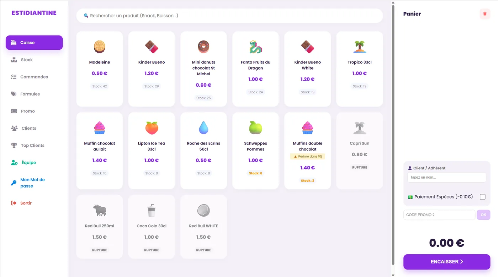

Projet associatif · L’Estidiantine, IUT de Metz
Une caisse et une gestion de stock pour l’association étudiante
Une application web (PHP, MySQL, JavaScript) qui remplace les cahiers et les fichiers Excel du local étudiant : encaissement, stocks par lots, ardoises et export comptable.

Le problème
La vente de snacks et de boissons au local se faisait avec des cahiers, des fichiers Excel et du calcul mental : erreurs de caisse, ardoises oubliées, produits périmés.
Contexte
En tant que président de l’association, j’avais besoin d’un outil simple, utilisable sur le PC du local comme sur un téléphone pendant les événements.
La démarche
Un modèle pensé pour la traçabilité
Les produits (nom, prix, type) sont séparés des lots physiques, chacun avec sa date limite. À chaque vente, le lot dont la date est la plus proche est décrémenté en premier, selon une logique FIFO.
Une caisse rapide
Le panier est calculé dans le navigateur, avec un moteur de formules qui applique d’abord les réductions les plus avantageuses (par exemple deux snacks et une boisson).
Des enregistrements fiables
Chaque commande est enregistrée dans une transaction : si une étape échoue, rien n’est écrit à moitié. Requêtes préparées et contrôle de session protègent contre les failles courantes.
Ardoises et comptabilité
Les commandes non payées sont regroupées par étudiant, avec un bouton pour tout régulariser. Montant réellement payé, pourboires et export CSV facilitent le suivi de trésorerie.
Pensée pour le téléphone
Sur mobile, les tableaux d’administration deviennent des cartes lisibles et les produits en rupture se grisent automatiquement.
Livrables
- Application de caisse et de gestion de stock
- Base de données MySQL normalisée
- Export CSV pour la trésorerie
Résultats
- Application mise en ligne sur un hébergement Alwaysdata et utilisée par le bureau de l’association.
Limites
- Code source et schéma de base non publiés : il s’agit du système d’encaissement réel de l’association.
Ce que j’en retiens
Ce projet m’a mis dans des conditions proches de l’entreprise : recueillir un besoin réel, proposer une architecture, développer seul puis mettre en ligne. Remplacer les rechargements de pages par des appels asynchrones a rendu la vente quasi instantanée.